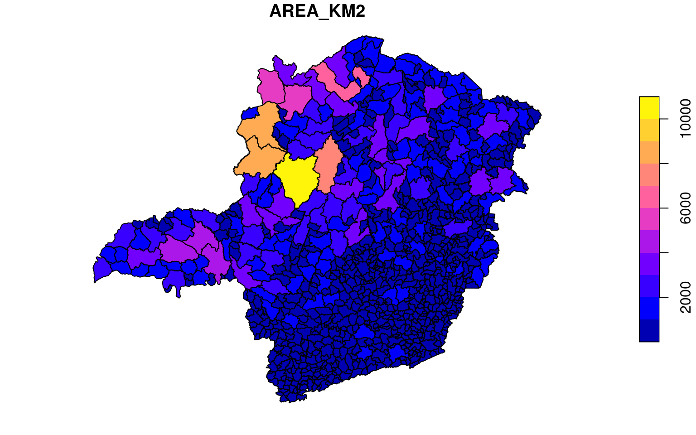
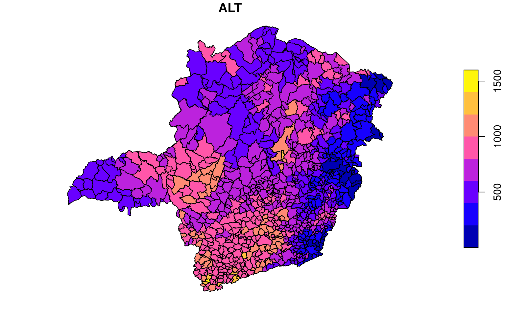

1 Análise Espacial Vetorial usando sf
1.1 Objetivos de Aprendizado
- Preparação e visualização de dados geoespaciais
- preparação de dados (dplyr)
- manipulação de dados espaciais (sf)
- visualização em mapas (ggplot e leaflet)
1.2 O problema
Visualização de estatísticas municipais para o estado de Minas Gerais
1.3 Dados disponíveis
- Shapefiles dos município de MG
- População por município 2022
- Altitude das sedes de município
- IDH por municípios
1.4 Estratégia de análise
Preparação do Ambiente RStudio
Leitura e preparação das tabelas de dados
- População por município 2022
- Altitude das sedes de município
- IDH por municípios
Leitura do shp
Integração dos dados
Visualização dos Mapas
1.5 Leitura dos Dados
1.5.1 Dados de População
- importar os dados de população, um arquivo csv
- fazer os ajustes que forem necessários
- biblioteca
dplyr(saiba mais sobre dplyr)
mun_pop = read.csv2("data/CD2022_Populacao_Total_Municipio.csv",
stringsAsFactors = FALSE)
head(mun_pop)## UF COD..UF COD..MUNIC NOME.DO.MUNICÍPIO POP..TOTAL
## 1 RO 11 15 Alta Floresta D'Oeste 21494
## 2 RO 11 23 Ariquemes 96833
## 3 RO 11 31 Cabixi 5351
## 4 RO 11 49 Cacoal 86887
## 5 RO 11 56 Cerejeiras 15890
## 6 RO 11 64 Colorado do Oeste 15663mun_pop = read.csv2("data/CD2022_Populacao_Total_Municipio.csv")read.csv2: função (base do R) é usada para ler dados de um arquivo CSV. O argumento"data/CD2022_Populacao_Total_Municipio.csv"especifica o caminho do arquivo CSV a ser lido.
head(mun_pop)head(): Esta função é usada para mostrar as primeiras linhas de um conjunto de dadosmun_popno console.
Observe que o código de município (“COD..MUNIC”), que deveria ter 5 dígitos, ficou truncado. Estes códigos, em muitos casos começa com zeros e no processo de leitura, são lidos como números e então perdem os zeros iniciais (não significativos). Além disso, é usual complementar o código com o código da UF e desta forma, o código completo de município terá 7 dígitos, dois dígitos iniciais com o código da UF e mais 5 referente ao município.
Para começar, vamos selecionar os registros referentes a MG - nosso objetivo de análise. Esta seleção de registros é conhecida como “filter”. No código abaixo, vamos filtrar os registros utilizando a sigla da UF, no caso “MG”, e guardar o resultado em um novo objeto, ‘mg_pop’.
library(dplyr)
# mg_pop = filter(mun_pop, UF == "MG") ## forma tradicional
mg_pop = mun_pop |> filter(UF == "MG") ## utilizando o pipe para concatenar os termos e comandos
head(mg_pop)## UF COD..UF COD..MUNIC NOME.DO.MUNICÍPIO POP..TOTAL
## 1 MG 31 104 Abadia dos Dourados 6272
## 2 MG 31 203 Abaeté 22675
## 3 MG 31 302 Abre Campo 13927
## 4 MG 31 401 Acaiaca 3909
## 5 MG 31 500 Açucena 8943
## 6 MG 31 609 Água Boa 12589Este trecho de código em R utiliza a biblioteca dplyr e a notação de pipe (|>) para filtrar o conjunto de dados mun_pop mantendo apenas as observações em que a variável UF (Unidade da Federação) é igual a “MG” (Minas Gerais). Vamos analisar o código linha por linha:
library(dplyr)- Carrega a biblioteca
dplyr, que fornece um conjunto de funções úteis para manipulação de dados em R, comofiltere o operador de pipe%>%ou|>.
- Carrega a biblioteca
mg_pop = mun_pop |> filter(UF == "MG")mun_pop |> filter(UF == "MG"): Utiliza o operador de pipe (|>) para encadear a funçãofilterao conjunto de dadosmun_pop. Isso é equivalente à forma tradicionalmg_pop = filter(mun_pop, UF == "MG").UF == "MG": É a condição de filtro, mantendo apenas as linhas em que a variávelUFé igual a “MG”.mg_pop: Armazena o resultado no objetomg_pop.
Agora, vamos ajustar o código dos municípios em duas etapas. A primeira padroniza em 5 dígitos incluindo zeros à esquerda e na segunda etapa adiciona o código de UF, “31 no caso de MG. Para isso, vamos utilizar a biblioteca stringr que tem diversas funções para manipulação de strings (texto). saiba mais sobre stringr
library(stringr)
mg_pop$COD..MUNIC=str_pad(mg_pop$COD..MUNIC,5,"left",pad="0")
mg_pop$COD..MUNIC=str_c("31",mg_pop$COD..MUNIC)
head(mg_pop)## UF COD..UF COD..MUNIC NOME.DO.MUNICÍPIO POP..TOTAL
## 1 MG 31 3100104 Abadia dos Dourados 6272
## 2 MG 31 3100203 Abaeté 22675
## 3 MG 31 3100302 Abre Campo 13927
## 4 MG 31 3100401 Acaiaca 3909
## 5 MG 31 3100500 Açucena 8943
## 6 MG 31 3100609 Água Boa 12589library(stringr): Isso carrega a bibliotecastringr, que fornece funções para manipulação de strings (texto)pop_data_MG$COD..MUNIC=str_pad(pop_data_MG$COD..MUNIC,5,"left",pad="0"): Nesta linha, o código está ajustando a largura da variávelCOD..MUNICno data framepop_data_MG.str_padé usado para adicionar zeros à esquerda da string contida empop_data_MG$COD..MUNICde modo que ela tenha comprimento igual a 5. Se o comprimento atual for menor que 5, zeros serão adicionados à esquerda. Se for maior, a string será truncada. O argumento"left"especifica que os zeros devem ser adicionados à esquerda.
pop_data_MG$COD..MUNIC=str_c("31",pop_data_MG$COD..MUNIC): Nesta linha, é adicionado o prefixo “31” à variávelCOD..MUNICempop_data_MG.str_cé utilizado para concatenar as strings. Portanto, o resultado será a concatenação de “31” com o conteúdo original depop_data_MG$COD..MUNIC, efetivamente formando um novo código municipal.
1.5.2 Dados de Altitude das sedes de municípios
- Carregar os dados de altitude das sedes de municípios, um arquivo csv
- observe que agora, foi utilizada uma função diferente para a leitura:
read.csv - este arquivo também é um csv, mas com algumas diferenças para o csv anterior. Neste, o separador de colunas é “,” ( no anterior era “;”) e a casa decimal deste é o “.” (no anterior era “,”)
alt_sede = read.csv("data/altitudes_sedes.csv")
alt_sede$CD_GEOCODM=as.character(alt_sede$CD_GEOCODM)
head(alt_sede)## CD_GEOCODM LONG LAT ALT
## 1 1100015 -61.99982 -11.935540 337.7357
## 2 1100023 -63.03327 -9.908463 138.6890
## 3 1100031 -60.54431 -13.499763 236.0632
## 4 1100049 -61.44294 -11.433865 177.4535
## 5 1100056 -60.81843 -13.195033 262.8113
## 6 1100064 -60.55507 -13.130564 419.0906alt_sede$CD_GEOCODM=as.character(alt_sede$CD_GEOCODM)alt_sede$CD_GEOCODM: Acessa a coluna chamadaCD_GEOCODMno conjunto de dadosalt_sede.as.character(): Converte os valores dessa coluna para o tipo de dado caractere (string). Isso pode ser útil quando se trabalha com códigos geográficos que não devem ser tratados como números.
1.6 Carregando os Shpefiles dos municípios
A biblioteca sf é uma das mais importantes e atuais para utilização com dados espaciais. O sf é uma implementação em R que incorpora:
- Um novo sistema de classes de dados espaciais em R.
- Funções para leitura e escrita de dados.
- Ferramentas para operações espaciais em vetores.
- saiba mais sobre sf.
Leia os dados e veja um gráfico:
library(sf)
# mg_muns = read_sf("data/MG_mun_shp/") # baste indicar a pastas que contem o shapefile
#caso tenha mais de um shp, especifique o nome do ".shp"
mg_muns = read_sf("data/MG_mun_shp/MG_Municipios_2022.shp")library(sf)- Carrega a biblioteca
sf, que é utilizada para manipular dados espaciais.
- Carrega a biblioteca
mg_muns = read_sf("data/MG_mun_shp/MG_Municipios_2022.shp")read_sf: Esta função é usada para ler dados espaciais de um arquivo shapefile (formato comum para dados espaciais)."data/MG_mun_shp/MG_Municipios_2022.shp": Especifica o caminho do arquivo shapefile a ser lido.mg_muns: Armazena os dados espaciais no objetomg_muns.
O objeto mg_muns tem uma classe especial
## [1] "sf" "tbl_df" "tbl" "data.frame"Objetos sf geralmente têm dois tipos - sf e data.frame. Duas diferenças principais em comparação com um objeto data.frame regular são metadados espaciais (tipo de geometria, dimensão, bbox, epsg (SRID), proj4string) e uma coluna adicional - geralmente chamada de geometria. No caso de mg_muns a geometria é referente aos polígonos dos municípios
Como mg_muns também é da classe data.frame, visualizar o conteúdo do objeto usando a função head mostra resultados semelhantes aos dados que lemos usando read.csv.
## Simple feature collection with 6 features and 4 fields
## Geometry type: POLYGON
## Dimension: XY
## Bounding box: xmin: -47.67975 ymin: -20.45593 xmax: -42.04511 ymax: -17.7664
## Geodetic CRS: SIRGAS 2000
## # A tibble: 6 × 5
## CD_MUN NM_MUN SIGLA_UF AREA_KM2 geometry
## <chr> <chr> <chr> <dbl> <POLYGON [°]>
## 1 3100104 Abadia dos Dourados MG 880. ((-47.45335 -18.46925, -47.45341 -18.…
## 2 3100203 Abaeté MG 1817. ((-45.50026 -19.22585, -45.50024 -19.…
## 3 3100302 Abre Campo MG 471. ((-42.42074 -20.39718, -42.42076 -20.…
## 4 3100401 Acaiaca MG 102. ((-43.12231 -20.43351, -43.12239 -20.…
## 5 3100500 Açucena MG 815. ((-42.43777 -19.17542, -42.43781 -19.…
## 6 3100609 Água Boa MG 1320. ((-42.32275 -18.17543, -42.3229 -18.1…Observe que este objeto tem uma coluna com a geometria. Neste caso o polígono com a delimitação espacial do município
Também podemos examinar sua classe:
## [1] "sf" "tbl_df" "tbl" "data.frame"Objetos sf geralmente têm dois tipos - sf e data.frame. Duas diferenças principais em comparação com um objeto data.frame regular são metadados espaciais (tipo de geometria, dimensão, bbox, epsg (SRID), proj4string) e uma coluna adicional - geralmente chamada de geometria.
Como o objeto shapefile tem a classe sf e data.frame, a função head mostra os os metadados espaciais e as primeiras linhas do data.frame.
## Simple feature collection with 6 features and 4 fields
## Geometry type: POLYGON
## Dimension: XY
## Bounding box: xmin: -47.67975 ymin: -20.45593 xmax: -42.04511 ymax: -17.7664
## Geodetic CRS: SIRGAS 2000
## # A tibble: 6 × 5
## CD_MUN NM_MUN SIGLA_UF AREA_KM2 geometry
## <chr> <chr> <chr> <dbl> <POLYGON [°]>
## 1 3100104 Abadia dos Dourados MG 880. ((-47.45335 -18.46925, -47.45341 -18.…
## 2 3100203 Abaeté MG 1817. ((-45.50026 -19.22585, -45.50024 -19.…
## 3 3100302 Abre Campo MG 471. ((-42.42074 -20.39718, -42.42076 -20.…
## 4 3100401 Acaiaca MG 102. ((-43.12231 -20.43351, -43.12239 -20.…
## 5 3100500 Açucena MG 815. ((-42.43777 -19.17542, -42.43781 -19.…
## 6 3100609 Água Boa MG 1320. ((-42.32275 -18.17543, -42.3229 -18.1…1.6.1 Sistema de Referência de Coordenadas
Cada objeto sf precisa de um sistema de referência de coordenadas (src ou crs, do inglês) definido para funcionar corretamente. Um sistema de referência de coordenadas contém tanto um datum quanto uma projeção. Grosso modo, o datum é como você georreferencia seus pontos (em 3 dimensões!) para um esferoide. A projeção é como esses pontos são transformados matematicamente para representar o ponto georreferenciado em uma folha de papel plana. Todos os sistemas de referência de coordenadas requerem um datum. No entanto, alguns sistemas de referência de coordenadas são “não projetados” (também chamados de sistemas de coordenadas geográficas). Coordenadas em latitude/longitude usam um sistema de coordenadas geográficas (não projetado).
Você pode ver qual src está definido usando a função st_crs:
## Coordinate Reference System:
## User input: SIRGAS 2000
## wkt:
## GEOGCRS["SIRGAS 2000",
## DATUM["Sistema de Referencia Geocentrico para las AmericaS 2000",
## ELLIPSOID["GRS 1980",6378137,298.257222101,
## LENGTHUNIT["metre",1]]],
## PRIMEM["Greenwich",0,
## ANGLEUNIT["degree",0.0174532925199433]],
## CS[ellipsoidal,2],
## AXIS["geodetic latitude (Lat)",north,
## ORDER[1],
## ANGLEUNIT["degree",0.0174532925199433]],
## AXIS["geodetic longitude (Lon)",east,
## ORDER[2],
## ANGLEUNIT["degree",0.0174532925199433]],
## USAGE[
## SCOPE["Horizontal component of 3D system."],
## AREA["Latin America - Central America and South America - onshore and offshore. Brazil - onshore and offshore."],
## BBOX[-59.87,-122.19,32.72,-25.28]],
## ID["EPSG",4674]]Isso parece bastante confuso. Sem entrar em detalhes, essa sequência longa indica que esses dados têm um sistema de coordenadas geográficas (SIRGAS 2000 ). Uma maneira conveniente de referenciar crs rapidamente é usando o código EPSG, um número que representa uma projeção e datum padrão. Você pode conferir uma lista de (muitos!) códigos EPSG aqui.
Muitas vezes, você precisará transformar seus dados geoespaciais de um sistema de coordenadas para outro. A função st_transform faz isso rapidamente.
## Coordinate Reference System:
## User input: EPSG:4326
## wkt:
## GEOGCRS["WGS 84",
## ENSEMBLE["World Geodetic System 1984 ensemble",
## MEMBER["World Geodetic System 1984 (Transit)"],
## MEMBER["World Geodetic System 1984 (G730)"],
## MEMBER["World Geodetic System 1984 (G873)"],
## MEMBER["World Geodetic System 1984 (G1150)"],
## MEMBER["World Geodetic System 1984 (G1674)"],
## MEMBER["World Geodetic System 1984 (G1762)"],
## MEMBER["World Geodetic System 1984 (G2139)"],
## ELLIPSOID["WGS 84",6378137,298.257223563,
## LENGTHUNIT["metre",1]],
## ENSEMBLEACCURACY[2.0]],
## PRIMEM["Greenwich",0,
## ANGLEUNIT["degree",0.0174532925199433]],
## CS[ellipsoidal,2],
## AXIS["geodetic latitude (Lat)",north,
## ORDER[1],
## ANGLEUNIT["degree",0.0174532925199433]],
## AXIS["geodetic longitude (Lon)",east,
## ORDER[2],
## ANGLEUNIT["degree",0.0174532925199433]],
## USAGE[
## SCOPE["Horizontal component of 3D system."],
## AREA["World."],
## BBOX[-90,-180,90,180]],
## ID["EPSG",4326]]1.6.2 Atributos
Objetos sf podem ser usados como um objeto data.frame regular em muitas operações.
## [1] 853## [1] 5nrow(mg_muns): retorna o número de linhas no objetomg_muns, ou seja, a contagem de observações no conjunto de dados. Isso é útil para saber quantos itens estão presentes no conjunto de dados.ncol(mg_muns): retorna o número de colunas no objetomg_muns, ou seja, a contagem de variáveis ou campos no conjunto de dados. Isso é útil para entender a dimensionalidade do conjunto de dados.
1.7 sf e o Tidyverse
Como objetos sf se integram bem com pacotes no tidyverse muito utilizado para preparação e manipulação de dados. Isto faz com que os objetos sf sejam facilmente manipulados. Aqui estão alguns exemplos simples:
1.7.1 select()
select(CD_MUN, NM_MUN): Utiliza a funçãoselectda bibliotecadplyrpara escolher apenas as colunasCD_MUNeNM_MUNdo conjunto de dadosmg_muns.
## Simple feature collection with 853 features and 2 fields
## Geometry type: POLYGON
## Dimension: XY
## Bounding box: xmin: -51.04608 ymin: -22.92276 xmax: -39.85683 ymax: -14.23318
## Geodetic CRS: SIRGAS 2000
## # A tibble: 853 × 3
## CD_MUN NM_MUN geometry
## <chr> <chr> <POLYGON [°]>
## 1 3100104 Abadia dos Dourados ((-47.45335 -18.46925, -47.45341 -18.46897, -47.45342 …
## 2 3100203 Abaeté ((-45.50026 -19.22585, -45.50024 -19.22578, -45.50019 …
## 3 3100302 Abre Campo ((-42.42074 -20.39718, -42.42076 -20.39719, -42.42094 …
## 4 3100401 Acaiaca ((-43.12231 -20.43351, -43.12239 -20.43343, -43.12245 …
## 5 3100500 Açucena ((-42.43777 -19.17542, -42.43781 -19.1754, -42.43782 -…
## 6 3100609 Água Boa ((-42.32275 -18.17543, -42.3229 -18.17546, -42.32331 -…
## 7 3100708 Água Comprida ((-48.12686 -19.9863, -48.12721 -19.98594, -48.12711 -…
## 8 3100807 Aguanil ((-45.4196 -21.02239, -45.42019 -21.02226, -45.4205 -2…
## 9 3100906 Águas Formosas ((-40.78501 -17.072, -40.78491 -17.0726, -40.78482 -17…
## 10 3101003 Águas Vermelhas ((-41.50309 -15.52667, -41.50264 -15.52646, -41.50257 …
## # ℹ 843 more rows%>%: O operador de pipe (%>%) é usado para encadear operações, permitindo que o resultado da expressão à esquerda seja passado como argumento para a expressão à direita.
O resultado dessa expressão será um novo conjunto de dados que contém apenas as colunas mencionadas (CD_MUN e NM_MUN). Esse tipo de operação é útil quando você deseja focar em colunas específicas do conjunto de dados e reduzir a quantidade de informações exibidas, facilitando a análise ou visualização dos dados desejados.
1.7.2 filter()
filter(NM_MUN == "Viçosa"): Utiliza a funçãofilterda bibliotecadplyrpara manter apenas as linhas em que o valor da colunaNM_MUNé igual a “Viçosa”.
## Simple feature collection with 1 feature and 4 fields
## Geometry type: POLYGON
## Dimension: XY
## Bounding box: xmin: -43.00487 ymin: -20.83898 xmax: -42.75358 ymax: -20.65473
## Geodetic CRS: SIRGAS 2000
## # A tibble: 1 × 5
## CD_MUN NM_MUN SIGLA_UF AREA_KM2 geometry
## * <chr> <chr> <chr> <dbl> <POLYGON [°]>
## 1 3171303 Viçosa MG 299. ((-42.89564 -20.8205, -42.89598 -20.82061, -42.896…O resultado dessa expressão será um novo conjunto de dados que contém apenas as linhas correspondentes ao município de “Viçosa” no conjunto de dados original mg_muns. Essa operação de filtro é útil quando você deseja examinar ou manipular dados específicos com base em critérios específicos.
1.7.3 Operações com a geometria
- Uma das variáveis em mg_muns é a área do município, caso não existisse, poderiamos obte-la com:
1.7.3.1 Abordagem Tradicional:
Nesta abordagem, as áreas são calculadas e armazenadas em area_mun usando o operador de pipe (|>). Em seguida, a função units::set_units é usada para definir as unidades da área como quilômetros quadrados.
area_mun é um vetor com os dados de área, mas não esta integrador ao objeto mg_muns
1.7.4 Abordagem com Pipe:
Nesta versão, a função units::set_units é encadeada diretamente ao resultado de st_area() usando o operador de pipe. Isso reduz a necessidade de criar uma variável intermediária. area_mun ainda não esta integrador ao objeto mg_muns
1.7.5 Abordagem com Pipe e Mutate:
mg_muns = mg_muns |> mutate(area_mun = st_area(geometry) |> units::set_units("km2") |> as.numeric())Nesta abordagem, a função mutate do dplyr é usada para adicionar uma nova coluna chamada area_mun ao conjunto de dados original mg_muns. O cálculo da área é feito usando st_area(geometry), e as unidades são definidas como quilômetros quadrados com units::set_units. A função as.numeric() é usada para garantir que a coluna resultante seja numérica.
Cada abordagem tem sua utilidade, e a escolha entre elas pode depender da preferência pessoal do programador ou do contexto específico em que estão sendo utilizadas. Todas as abordagens calculam a área em quilômetros quadrados para os municípios de Minas Gerais.
1.7.6 Observando as duas medidas de área
## Simple feature collection with 5 features and 2 fields
## Geometry type: POLYGON
## Dimension: XY
## Bounding box: xmin: -47.67975 ymin: -20.45593 xmax: -42.20555 ymax: -18.15839
## Geodetic CRS: SIRGAS 2000
## # A tibble: 5 × 3
## AREA_KM2 area_mun geometry
## <dbl> <dbl> <POLYGON [°]>
## 1 880. 883. ((-47.45335 -18.46925, -47.45341 -18.46897, -47.45342 -18.46732, …
## 2 1817. 1823. ((-45.50026 -19.22585, -45.50024 -19.22578, -45.50019 -19.22532, …
## 3 471. 472. ((-42.42074 -20.39718, -42.42076 -20.39719, -42.42094 -20.39735, …
## 4 102. 102. ((-43.12231 -20.43351, -43.12239 -20.43343, -43.12245 -20.43337, …
## 5 815. 818. ((-42.43777 -19.17542, -42.43781 -19.1754, -42.43782 -19.1754, -4…select(AREA_KM2, area_mun): Seleciona as colunasAREA_KM2earea_mundo conjunto de dadosmg_muns.slice_head(n = 5): Usa a funçãoslice_head(dplyr) para exibir as primeiras cinco linhas do conjunto de dados resultante.
O resultado final será um subconjunto do conjunto de dados original mg_muns, incluindo apenas as colunas AREA_KM2 e area_mun, com as primeiras cinco linhas. Isso é útil para visualizar rapidamente as áreas em quilômetros quadrados calculadas usando as diferentes abordagens mencionadas anteriormente.
1.7.7 Mapa
Como o objeto mg_muns é da classe sf com geometria de polygonos, o plot simples será um mapa como segue.

plot(mg_muns |> select(AREA_KM2))mg_muns |> select(AREA_KM2): Seleciona a colunaAREA_KM2do conjunto de dadosmg_muns. A funçãoselecté usada para escolher colunas específicas.plot(...): Gera um gráfico do objeto espacial resultante, que é uma representação visual dos municípios de Minas Gerais com destaque para a área em quilômetros quadrados.
É uma visualização simple que serve para um momento de análise e visualização rápida. Há outras formas mais elaboradas para gerar a visualização
1.7.8 Recapitulados o que foi feito até agora:
mg_pop: tabela de dados com a população por município. Identificação de município por nome ou códigoalt_sede: tabela de dados com as altitudes das sedes dos municípios. Identificação de município por códigomg_muns- é o shape file de municípios com geometria e metadados. Identificação de município por nome ou código
Para a análise final precisamos agregar os dados de população e altitude em mg_muns
1.7.9 Joins
1.7.9.1 Joins não espaciais
Podemos agregar as duas tabelas mg_pop e alt_sede utilizando o código de município. Neste caso, apesar de
alt_sede ter informação para todos os municípios do Brasil, a agregação se dará apenas nos códigos encontrados em mg_pop, municípios de MG. A operação em join garante a correspondência pelo identificador especificado, no caso, código de município
## UF COD..UF COD..MUNIC NOME.DO.MUNICÍPIO POP..TOTAL LONG LAT ALT
## 1 MG 31 3100104 Abadia dos Dourados 6272 -47.39683 -18.48756 753.1249
## 2 MG 31 3100203 Abaeté 22675 -45.44619 -19.15585 644.7399
## 3 MG 31 3100302 Abre Campo 13927 -42.48099 -20.30145 589.8301
## 4 MG 31 3100401 Acaiaca 3909 -43.14824 -20.36041 492.7910
## 5 MG 31 3100500 Açucena 8943 -42.54621 -19.07671 473.7021
## 6 MG 31 3100609 Água Boa 12589 -42.38964 -17.99105 432.4472left_join: Esta função realiza uma junção (à esquerda) entre dois conjuntos de dados, preservando todas as linhas do conjunto de dados da esquerda (mg_pop) e correspondendo as linhas do conjunto de dados da direita (alt_sede) com base nas colunas especificadas.by = c("COD..MUNIC" = "CD_GEOCODM"): Especifica as colunas com as referencias pelas quais a junção será realizada. Neste caso, as colunasCOD..MUNICdo conjunto de dados à esquerda eCD_GEOCODMdo conjunto de dados à direita são usadas para realizar a junção.
O resultado final será um novo conjunto de dados, mg_pop_2 que contém todas as colunas de mg_pop e alt_sede, onde as linhas são correspondentes com base na condição estabelecida. Isso é útil para combinar informações de diferentes conjuntos de dados com base em chaves específicas. O conjunto resultante terá todas as linhas de mg_pop e as colunas adicionais de alt_sede para as linhas correspondentes, enquanto as linhas não correspondentes terão valores NA nas colunas de alt_sede.
- há outras variações de
joinsaiba mais sobre dplyr
Neste caso, eram dois data frames, mas poderia ser também um objeto classe sf
mg_muns_2 = left_join(mg_muns, mg_pop_2 |> select(COD..MUNIC,POP..TOTAL, ALT), by=c("CD_MUN"="COD..MUNIC"))
head(mg_muns_2)## Simple feature collection with 6 features and 7 fields
## Geometry type: POLYGON
## Dimension: XY
## Bounding box: xmin: -47.67975 ymin: -20.45593 xmax: -42.04511 ymax: -17.7664
## Geodetic CRS: SIRGAS 2000
## # A tibble: 6 × 8
## CD_MUN NM_MUN SIGLA_UF AREA_KM2 geometry area_mun POP..TOTAL ALT
## <chr> <chr> <chr> <dbl> <POLYGON [°]> <dbl> <int> <dbl>
## 1 3100104 Abadi… MG 880. ((-47.45335 -18.46925, -… 883. 6272 753.
## 2 3100203 Abaeté MG 1817. ((-45.50026 -19.22585, -… 1823. 22675 645.
## 3 3100302 Abre … MG 471. ((-42.42074 -20.39718, -… 472. 13927 590.
## 4 3100401 Acaia… MG 102. ((-43.12231 -20.43351, -… 102. 3909 493.
## 5 3100500 Açuce… MG 815. ((-42.43777 -19.17542, -… 818. 8943 474.
## 6 3100609 Água … MG 1320. ((-42.32275 -18.17543, -… 1325. 12589 432.mg_pop_2 |> select(COD..MUNIC, POP..TOTAL, ALT): Seleciona as colunas relevantes (COD..MUNIC,POP..TOTAL,ALT) do conjunto de dados à direita (mg_pop_2) usando a notação de pipe (|>).
O resultado final é um novo conjunto de dados chamado mg_muns_2, que contém todas as colunas de mg_muns incluindo a geometria e as colunas adicionais selecionadas de mg_pop_2 para as linhas correspondentes.
Desta forma podemos explorar

1.7.10 Join espacial
Vamos supor que o arquivo alt_sede não tenha a coluna de código de município. Neste caso não seria possível fazer o join como fizemos anteriormente, utilizando o código. Porem, alt_sede tem a coordenada do ponto onde foi feita a medida de altitude e este ponto corresponde a sede do município. Neste caso podemos transformar alt_sede em um objeto sf criando a geometria de pontos e em seguida agregar a mg_muns por um join espacial. O pacote sf tem funções para concatenar dados ‘joins’ espaciais, úteis quando você deseja utilizar dois conjuntos de dados com base nas geometrias.
1.7.10.1 Criando um objeto sf
## CD_GEOCODM LONG LAT ALT
## 1 1100015 -61.99982 -11.935540 337.7357
## 2 1100023 -63.03327 -9.908463 138.6890
## 3 1100031 -60.54431 -13.499763 236.0632
## 4 1100049 -61.44294 -11.433865 177.4535
## 5 1100056 -60.81843 -13.195033 262.8113
## 6 1100064 -60.55507 -13.130564 419.0906alt_sede_sf = st_as_sf(alt_sede,
coords = c('LONG', 'LAT'),
crs = 4674,
remove = F)
head(alt_sede_sf)## Simple feature collection with 6 features and 4 fields
## Geometry type: POINT
## Dimension: XY
## Bounding box: xmin: -63.03327 ymin: -13.49976 xmax: -60.54431 ymax: -9.908463
## Geodetic CRS: SIRGAS 2000
## CD_GEOCODM LONG LAT ALT geometry
## 1 1100015 -61.99982 -11.935540 337.7357 POINT (-61.99982 -11.93554)
## 2 1100023 -63.03327 -9.908463 138.6890 POINT (-63.03327 -9.908463)
## 3 1100031 -60.54431 -13.499763 236.0632 POINT (-60.54431 -13.49976)
## 4 1100049 -61.44294 -11.433865 177.4535 POINT (-61.44294 -11.43387)
## 5 1100056 -60.81843 -13.195033 262.8113 POINT (-60.81843 -13.19503)
## 6 1100064 -60.55507 -13.130564 419.0906 POINT (-60.55507 -13.13056)st_as_sf: Esta função (sf) converte um conjunto de dados em um objeto do tiposf(dados espaciais).alt_sede: É o conjunto de dados que será convertido.coords = c('LONG', 'LAT'): Especifica quais colunas contêm as coordenadas espaciais (longitude e latitude).crs = 4674: Define o sistema de referência de coordenadas (CRS, do inglês Coordinate Reference System) para o código 4674.remove = F: Indica que não deve remover as colunas de coordenadas originais do conjunto de dados.
O resultado final é o objeto alt_sede_sf, que agora é um conjunto de dados espaciais (sf) pronto para ser usado em operações espaciais, como junções espaciais (st_join). Essa conversão é frequentemente necessária ao trabalhar com dados espaciais para aproveitar as funcionalidades específicas de manipulação e análise espacial oferecidas pela biblioteca sf.
1.7.10.2 join espacial
Agora vamos realiza o join espacial o st_join
## Simple feature collection with 6 features and 9 fields
## Geometry type: POLYGON
## Dimension: XY
## Bounding box: xmin: -47.67975 ymin: -20.45593 xmax: -42.04511 ymax: -17.7664
## Geodetic CRS: SIRGAS 2000
## # A tibble: 6 × 10
## CD_MUN NM_MUN SIGLA_UF AREA_KM2 geometry area_mun CD_GEOCODM LONG
## <chr> <chr> <chr> <dbl> <POLYGON [°]> <dbl> <chr> <dbl>
## 1 3100104 Abadi… MG 880. ((-47.45335 -18.46925, -… 883. 3100104 -47.4
## 2 3100203 Abaeté MG 1817. ((-45.50026 -19.22585, -… 1823. 3100203 -45.4
## 3 3100302 Abre … MG 471. ((-42.42074 -20.39718, -… 472. 3100302 -42.5
## 4 3100401 Acaia… MG 102. ((-43.12231 -20.43351, -… 102. 3100401 -43.1
## 5 3100500 Açuce… MG 815. ((-42.43777 -19.17542, -… 818. 3100500 -42.5
## 6 3100609 Água … MG 1320. ((-42.32275 -18.17543, -… 1325. 3100609 -42.4
## # ℹ 2 more variables: LAT <dbl>, ALT <dbl>O código st_join(mg_muns, alt_sede_sf) usa a função st_join da biblioteca sf para realizar uma junção espacial entre os conjuntos de dados mg_muns e alt_sede_sf. Vamos analisar o código:
st_join: Esta função (sf) realiza uma junção espacial entre dois conjuntos de dadossf(dados espaciais). A junção é realizada com base na sobreposição espacial dos objetos em ambos os conjuntos.
O resultado final é um novo conjunto de dados chamado mg_muns_3, que contém todas as colunas de mg_muns e as colunas adicionais de alt_sede_sf para as áreas que têm sobreposição espacial. Essa operação é útil quando você deseja combinar informações de diferentes conjuntos de dados com base em sua proximidade espacial ou sobreposição geográfica.
Para finalizar, falta agregar a população que pode ser feita por um join não espacial
mg_muns_3 = left_join(mg_muns_3, mg_pop |> select(COD..MUNIC,POP..TOTAL), by=c("CD_MUN"="COD..MUNIC"))
head(mg_muns_3)## Simple feature collection with 6 features and 10 fields
## Geometry type: POLYGON
## Dimension: XY
## Bounding box: xmin: -47.67975 ymin: -20.45593 xmax: -42.04511 ymax: -17.7664
## Geodetic CRS: SIRGAS 2000
## # A tibble: 6 × 11
## CD_MUN NM_MUN SIGLA_UF AREA_KM2 geometry area_mun CD_GEOCODM LONG
## <chr> <chr> <chr> <dbl> <POLYGON [°]> <dbl> <chr> <dbl>
## 1 3100104 Abadi… MG 880. ((-47.45335 -18.46925, -… 883. 3100104 -47.4
## 2 3100203 Abaeté MG 1817. ((-45.50026 -19.22585, -… 1823. 3100203 -45.4
## 3 3100302 Abre … MG 471. ((-42.42074 -20.39718, -… 472. 3100302 -42.5
## 4 3100401 Acaia… MG 102. ((-43.12231 -20.43351, -… 102. 3100401 -43.1
## 5 3100500 Açuce… MG 815. ((-42.43777 -19.17542, -… 818. 3100500 -42.5
## 6 3100609 Água … MG 1320. ((-42.32275 -18.17543, -… 1325. 3100609 -42.4
## # ℹ 3 more variables: LAT <dbl>, ALT <dbl>, POP..TOTAL <int>1.7.11 Salvar
Salve o objeto espacial no disco usando write_sf() e especificando o nome do arquivo. Escrever seu arquivo com a extensão .shp assumirá um driver ESRI, mas existem muitas outras opções de formato disponíveis.